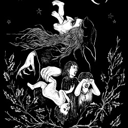
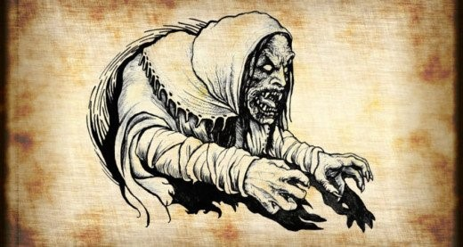

Grýla is a giantess with an appetite for the flesh of mischievous children, whom she cooks in a large pot.
On Christmas eve, Gunnar plays in his room with his sister when he hears a little noise at the window. He thinks it is just the wind, so he ignores it. Little does he know he is being watched by a Yule Lad who is one of 13 sons of a giant horned troll named Gryla in the mountains. Each of Lads has a different job. For example, Pottasleikr, the Pot Licker, steals leftovers from pits, and Kertasnikir steals candles from children. Little Gunnar is being watched by Gluggagaegir, the window peeper, who looks into children's bedrooms looking for toys to steal. However, peeper notices how cruelly Gunna is acting toward his little sister and informs his mother of this since he knows Gryla has an appetite for naughty children. Later that night, when Gunnar is playing outside alone, he hears a rustling noise in the darkness. Before he can run away, he feels cold, dead fingers wrap around his body as he is tossed into a sack where other children try in vain to claw their way out. Gryla takes children into her caves and throws them into a cauldron, boiled to death and promptly eaten by the whole troll family.
Grýla, being a wicked woman, has horrifying features like hooves, horns, big ears, wrinkled face, prominent nose and tail. She has an overall ugly appearance which is made even scarier with her unappealing black, shambolic hair that is usually covered with a scarf or a hat. She carries a big sack to store the kidnapped children. She is portrayed as wicked woman who is fastidiously addicted to boiling and eating the mischievous children that she kidnaps. She has an excellent sense of hearing which enables her to identify the children who have been mischievous throughout the year. She sets off for her annual tour during Christmas and kidnaps all of the bad children. Parents used to threaten their children with her name whenever they misbehaved.

Icelandic Christmas folklore depicts mountain-dwelling characters and monsters who come to town during Christmas. The stories are directed at children and are used to scare them into good behavior. Grýla is originally mentioned as being a giantess, in the 13th century compilation of Norse mythology, Prose Edda, but no specific connection to Christmas is mentioned until the 17th century.
The oldest poems about Grýla describe her as a parasitic beggar. She walks around asking parents to give her their disobedient children. Her plans can be thwarted by giving her food or chasing her away. Originally, she lived in a small cottage, but in later poems, she appears to have been forced out of town and into a remote cave.
Current-day Grýla can detect children who are misbehaving year-round. She comes from the mountains during Christmas time to search nearby towns for her meal. She leaves her cave, hunts children, and carries them home in her giant sack. She devours children as her favourite snack. Her favorite dish is a stew of naughty kids, for which she has an insatiable appetite. According to legend, there is never a shortage of food for Grýla.